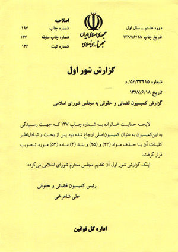

پذيرش > سایت نوشته ها > مرداد 86 تا شهریور 87
 روزشمار وقایع اتفاقیه لایحه حمایت خانواد روزشمار وقایع اتفاقیه لایحه حمایت خانواد

 مرداد 86 تا شهریور 87 مرداد 86 تا شهریور 87
22 شهریور 1387 - میدان زنان - نسخه قابل چاپ
تیر 86: تصویب لایحه حمایت خانواده در جلسه هیات وزیران
1 مرداد 86: ارسال لایحه حمایت خانواده از دولت به مجلس
نیمه مرداد: آغاز انتقادها از ماده 23 لایحه حمایت خانواده با مصاحبه نمایندگان زن مجلس هفتم و پیگیری مساله از سوی حقوقدانان و فعالان جنبش زنان
24 مرداد 86: نخستین موضع گیری سخنگوی قوه قضاییه در نقد اقدام دولت برای اضافه کردن ماده 23 به لایحه پیشنهادی قوه قضاییه
26 مرداد 86: نخستین دفاع سخنگوی دولت و وزیر دادگستری از لایحه حمایت خانواده
2 شهریور 86: گشایش بخش ویژه "نه! به لایحه حمایت از مردان خانواده" در وب سایت میدان زنان و انتشار مقالات و مطالب متعدد در اطلاع رسانی، نقد و روشنگری پیرامون لایحه
5 شهریور 86: آغاز بررسی لایحه حمایت خانواده در کمیسیون فرهنگی مجلس
5 شهریور 86: شیرین عبادی در سالگرد کمپین یک میلیون امضا برای تغییر قوانین تبعیض آمیز اعلام کرد: اگر مجلس لايحه حمايت از خانواده را از دستور کار خارج نکند، ما زنان مقابل مجلس مي رويم
7 شهریور 86: سیاسی خواندن اعتراضها به لایحه از سوی لاله افتخاری، نماینده مجلس
11 شهریور 86: برگزاری نشست بررسي لايحه حمايت خانواده از منظر حقوقي، جامعه شناسي، روان شناسي از سوی فعالان کمپین یک میلیون امضا
13 شهریور 86: برگزاری اولین نشست "لايحه حمايت خانواده؛ تزلزل ياتحكيم" از سوی کمیسیون زنان حزب مشارکت
13 شهریور 86: انتشار بیانیه زنان اصلاح طلب در اعتراض به لايحه حمايت خانواده
19 شهریور 86: انتشار بیانیه 2000 مدافع حقوق برابر در اعتراض به لايحه حمايت خانواده با خواست خروج لایحه از دستور کار
1مهر 86: برگزاری دومين نشست بررسي لايحه حمايت خانواده : تحکيم يا تزلزل از سوی کميسيون زنان و شاخه زنان جبهه مشارکت
4 مهر 86: برگزاری جلسهي دبيرخانه احزاب زنان اصولگرا دربارهي نقد و بررسي لايحهي حمايت از خانواده، در دفتر جامعهي زينب
5 مهر 86: برگزاری ميزگرد بررسي و آسيبشناسي لايحه حمايت ازخانواده در کميته زنان خانه احزاب
6 مهر 86: اعلام نتایج اولیه نظرسنجی سایت میدان زنان درباره لایحه حمایت خانواده: 81 درصد، مخالف!
12 مهر 86: انتشار بيانيه انجمن زنان کارآفرين در محکوميت لايحه حمايت خانواده
آبان 86: چاپ و انتشار 2000 کارت پستال "نه! به لایحه حمایت خانواده" از سوی گروه میدان زنان و ارسال آن به وسیله مردم شهرهای مختلف به نمایندگان مجلس
22 مهر 86: دفاع فاطمه آلیا، مسوول کميته زنان و خانواده مجلس هفتم از ازدواج مجدد
13 اذر 86: انتشار نامه اعتراضی بیش از 550 فعال حقوق زن به نمایندگان مجلس با درخواست گفت و گو در یک محیط آرام از مسئولان صدا و سیما
8 آبان 86: اعلام اینکه تصویب لایحه خانواده به عمر مجلس هفتم نمی رسد از سوی نایب رییس کمیسیون حقوقی مجلس
16 آذر 86: اعلام فتوای آیت الله صانعی مبنی بر حرام بودن ازدواج مجدد بدون اجازه همسر اول
20 آذر 87: اعتراض شدید هیات نمایندگی پارلمان اروپا به لایحه حمایت خانواده در هنگام بازدید از مجلس
28 آذر 86: دفاع فاطمه بداغی، نماینده قوه قضاییه در شورای فرهنگی-اجتماعی زنان از لایحه حمایت خانواده
دی 86: ارسال نامه هایی از سوی زنان خانه دار به نمایندگان مجلس در اعتراض به تسهیل چند همسری در لایحه
دی 86 تا شهریور 87: پخش میزگردهای متعدد در نقد لایحه حمایت خانواده در برنامه روزانه "اردیبشهت"، شبکه 4 سیما
3 دی 86: اعلام آمادگی زنان نماینده مجلس برای گفت و گو با منتقدان لایحه
11 اسفند 86: اعلام اینکه لایحه حمایت خانواده در دستور کار مجلس هفتم قرار نمی گیرد و بررسی آن به مجلس بعدی موکول شده است از سوی عشرت شایق
18 تیر 87: تصویب کلیات لایحه حمایت خانواده در کمیسیون قضایی و حقوقی مجلس
مرداد 87: آغاز دور دوم اعتراضهای فعالان جنبش زنان به لایحه حمایت خانواده
مرداد 87: آغاز دور دوم پخش و ارسال کارت پستالهای نه به لایحه حمایت خانواده به نمایندگان مجلس
مرداد 87: آغاز پخش بروشورهای ائتلاف علیه لایحه حمایت خانواده
مرداد 87: آغاز تماسهای تلفنی شهروندان با نمایندگان مجلس برای اعتراض به لایحه حمایت خانواده
8 مرداد 87: آغاز به کار رسمی وبلاگ ائتلاف گروهها و فعالان جنبش زنان علیه لایحه حمایت از خانواده
11 مرداد 87: انتشار ییانیه شورای فعالان ملی - مذهبی در مورد لایحه «حمایت از خانواده»
13 مرداد 87: اعلام فتوای آیت الله صانعی مبنی بر حرام بودن وضع مالیات بر مهریه
13 مرداد 87: انتشار بیانیه کمیته گزارشگران حقوق بشر: لایحه ضدبشری موسوم به " حمایت از خانواده " را از دستور کار خارج کنید
14 مرداد 87: برگزاری نشست مطبوعاتی کانون مدافعان حقوق بشر با سخنرانی عده ای از صاحبنظران و فعالان
14 مرداد 87: زهره طبیب زاده، رییس مرکز امور زنان و خانواده، انتقادهای وارد بر لایحه را غوغاسالاری فمینیستی خواند
15 مرداد 87: ارسال نامه جامعه زینب با عنوان "سخنی با نمایندگان"
16 مرداد 87: برگزاری نشست بررسي و نقد لايحه حمايت خانواده در حزب مشارکت
17 مرداد 87: تاکید بر اصلاح لایحه حمایت از خانواده در مجمع عمومی خانه احزاب
19 مرداد 87: برگزاری همايش حمايت از حقوق زن در خانواده در واكنش به لايحه "حمايت خانواده"از سوي جمعيت زنان مسلمان نوانديش
21 مرداد 87: انتشار بیانیه کمیسیون زنان دفتر تحکیم وحدت در اعتراض به لایحه
24 مرداد 87: اعلام اینکه 65 نماینده مجلس دو زن یا بیشتر دارند
30 مرداد 87: راه افتادن وبلاگ "شلوارهای نازک احساس در خانه ملت" برای معرفی نمایندگان چند زنه
31 مرداد 87: پیوستن بیش از 2200 نفر به ائتلاف جنبش زنان علیه لایحه حمایت خانواده
1 شهریور 87: حمله خبرگزاری جمهوری اسلامی به ائتلاف علیه لایحه
8 شهریور: اعلام ارسال نامه اعتراضی زنان عضو شورای شهر به نمایندگان مجلس درباره لایحه
9 شهریور 87: پیوستن بیش از 800 نفر دیگر به ائتلاف 2200 نفره علیه لایحه حمایت خانواده
10 شهریور 87، ساعت 8 صبح: لاریجانی، رییس مجلس از کمیسیون قضایی خواست لایحه حمایت خانواده را با دقت بیشتری مورد بررسی قرار دهند
10 شهریور، ساعت 12 تا 2: حضور بیش از 100 زن در سالن انتظار دیدار با نمایندگان و ملاقات آنان با 50 نماینده مجلس در اعتراض به لایحه و با خواسته خروج لایحه از دستور کار مجلس
10 شهریور، ساعت 4 بعد از ظهر: اعلام از دستور کار خارج شدن موقتی لایحه و اعاده آن به کمیسیون قضایی از سوی حاجی بابایی، عضو هیات رییسه مجلس
11 تا 18 شهریور: ادامه دیدارهای اعتراضی زنان با نمایندگان
11 تا 12 شهریور: اظهار نظرهای متناقض نمایندگان مجلس درباره خروج لایحه از دستور کار
13 شهریور: فاطمه آلیا و دو تن از نمایندگان دیگر اقدام هیات رییسه را در خروج لایحه از دسور کار غیر قانونی دانستند و فاطمه آلیا زنانی را که به مجلس آمده بودند "مشتی لاییک لجن پراکن" خطاب کرد
13 شهریور: اعلام خبر نامه معصومه ابتکار، زهرا شجاعی و فاطمه راکعی به رهبری در مورد لایحه
14 شهریور: پخش میزگرد در دفاع از لایحه حمایت خانواده با حضور زهرا آیت اللهی، عضو شورای فرهنگی-اجتماعی زنان، زهره طبیب زاده، رییس مرکز امور زنان و خانواده و علامحسین الهام، وزیر دادگستری و سخنگوی دولت در پایان اخبار ساعت 22.30 شبکه دوم سیما
15 شهریور 87: آیت الله امینی، امام جمعه قم، از مجلس خواست در مواد 23 و 25 لایحه تجدید نظر کند
16 شهریور 87: اعلام آمادگی دولت برای حذف مواد 23 و 25 از لایحه توسط وزیر دادگستری
17 شهریور: ارسال پیشنهادات جمعی از وکلا، کمیته زنان خانه احزاب و جامعه زینب به کمیسیون قضایی و حقوقی مجلس
18 شهریور 87: حذف دو ماده 23 و 25 و بند 4 ماده 53 از لایحه حمایت خانواده در کمیسیون قضایی و حقوقی مجلس
19 شهریور: تصویب کلیات لایحه حمایت خانواده بدون دو ماده 23 و 25 در صحن علنی مجلس
ادامه دارد...
میدان زنان
ارسال به
بالاترین
،
توییتر
،
فریندفید
،
فیسبوک
در همين بخش :
 یک خبر تلخ؟ یک قانونشکنی؟ یک تصمیم بخشنامهای جدید؟ یک خبر تلخ؟ یک قانونشکنی؟ یک تصمیم بخشنامهای جدید؟
چرا بایست به سکسوالیته پرداخت؟ / نفیسه آزاد
آزارجنسی خانگی؛ «قربانی» نه، «نجات یافته»
زنان، بزرگترین بازندگان بهار عرب
سانسور از دیدگاه جنسیتی/الهه امانی
ديگر بخش ها :
طرح یک میلیون امضا
|
مقالات
|
سایت نوشته ها
|
اخبار
|
گزارش كمپين
|
گفت و گو
|
علیه سکوت
|
كوچه به كوچه
|
نامه های شما
|
گزارش ویژه
|
گفتگو با اعضا
|
ویژه سالگرد کمپین
|
تصویر برابری
|
دل آرام علی
|
تریبون
|
مقالات
|
تاریخ شفاهی
|
خارج از چارچوب
|
کتابخانه
|
درباره کمپین
|
کمپین در شهرها
|
کمپین در بند
|
صدای تغییر
|
ویژه 22 خرداد
|
لایحه حمایت از خانواده
|
گالری
|
عشا مومنی
|
امیر یعقوبعلی
|
خدیجه مقدم
|
راحله عسگری زاده و نسیم خسروی
|
پروین اردلان،جلوه جواهری، مریم حسین خواه، ناهید کشاورز
|
زینب پیغمبرزاده
|
سعیده امین، سارا ایمانیان، محبوبه حسین زاده، ناهید کشاورز و همایون نامی
|
احترام شادفر
|
نسیم سرابندی زاده،فاطمه دهدشتی
|
وبلاگ مهمان
|
پرونده خرم آباد
|
دستگیری ها
|
مریم مالک
|
پرستو اللهیاری
|
مهرنوش اعتمادی
|
سمیه رشیدی
|
Other Languages
|
همراهان
|
«فراخوان کمپین ده روز با بهاره هدایت»
| English
|